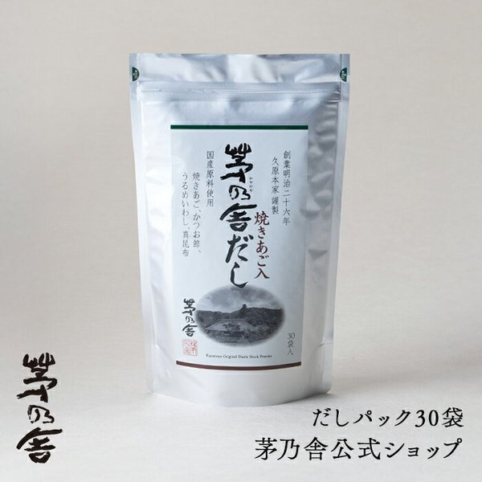
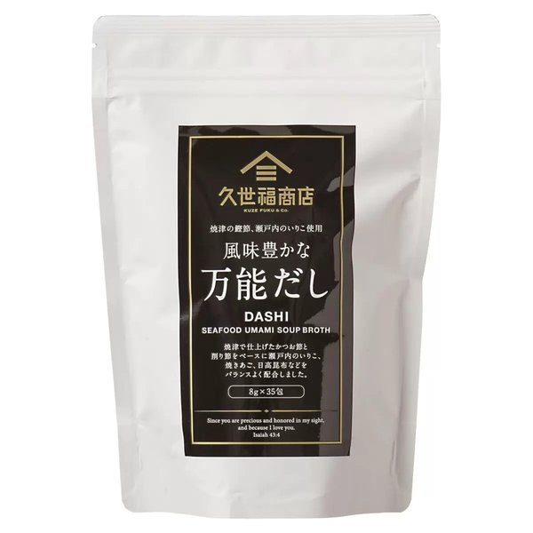
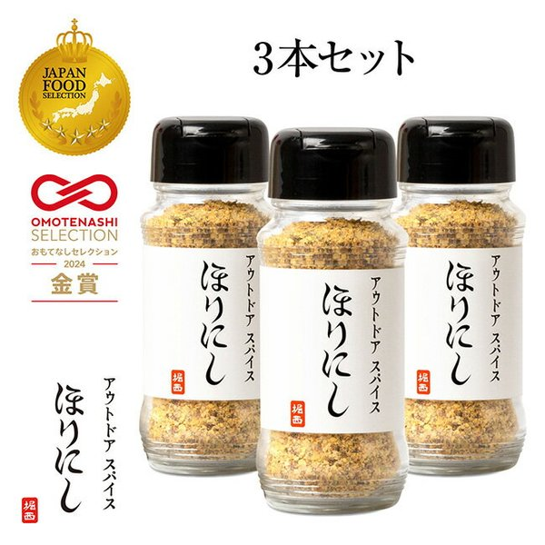
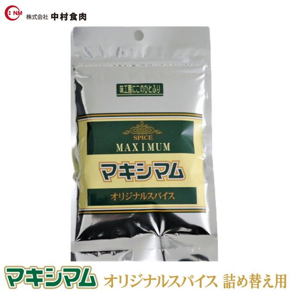
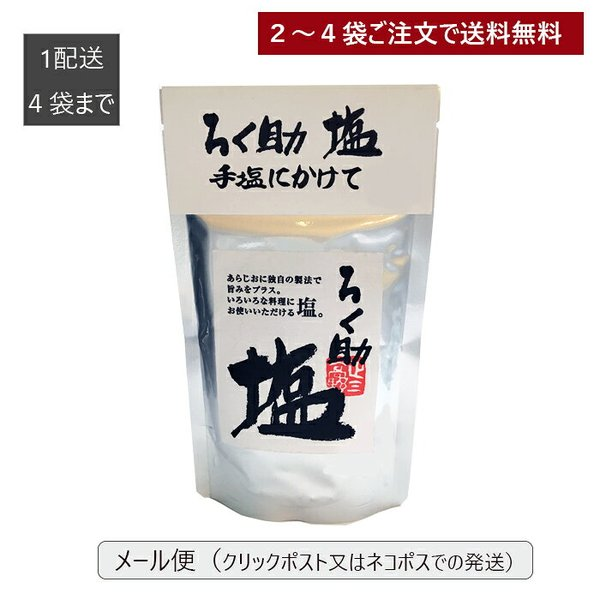
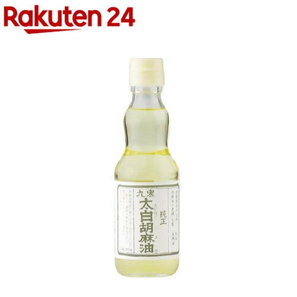
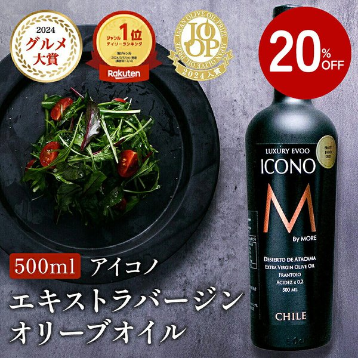
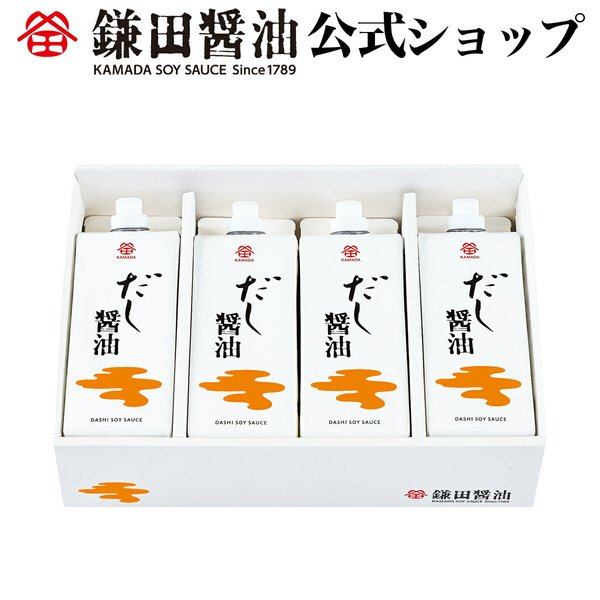
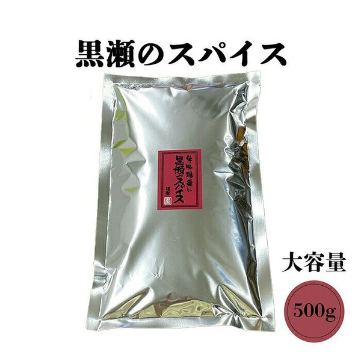
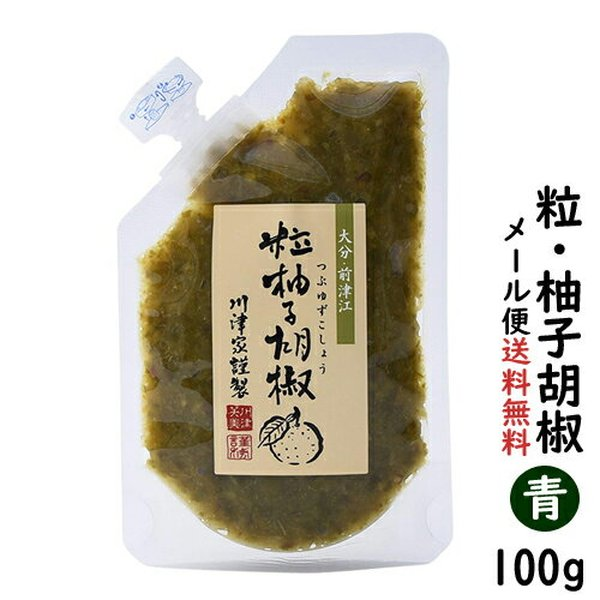

【2026年・名品だしとスパイス】茅乃舎だし・久世福万能だし・ほりにし・マキシマム・ろく助の塩・九鬼ごま油・オリーブオイル・だし醤油10選｜いつもの料理が変わる調味料を実売価格で比較
料理がおいしくならない原因は、腕より調味料のことが多いです。だしが薄い、塩気に旨味がない、香りが足りない。どれも1本足すだけで変わります。
選ぶ軸は3つです。「まずだし」。味噌汁やうどんの土台になるので、食塩無添加のだしパックを1つ選ぶと、味付けの調整がしやすくなります。「次にスパイス」。肉にかけるだけの万能タイプと、塩・胡椒・ハーブを自分で合わせるタイプでは手間が違います。忙しい日は振りかけるだけのタイプが向いています。「最後にオイルと発酵調味料」。香りの立たない太白ごま油は下味と揚げ物に、香りの強いオリーブオイルは仕上げにかけると役割が分かれます。
本記事では、楽天市場で人気・高評価の名品だし・スパイス・調味料10選を、実売価格とレビュー評価つきで写真付き紹介します。
- おすすめ10選 スペック・特徴比較表
- BEST 1｜茅乃舎だし だしパック30袋
- BEST 2｜万能だし 8g×35袋
- BEST 3｜アウトドアスパイス 3本セット
- BEST 4｜マキシマム オリジナルスパイス 120g詰め替え用
- BEST 5｜ろく助の塩 顆粒タイプ 130g
- BEST 6｜太白純正胡麻油 340g
- BEST 7｜エキストラバージンオリーブオイル ICONO 500ml
- BEST 8｜だし醤油 500ml 4本入
- BEST 9｜黒瀬のスパイス つめかえ用 500g
- BEST 10｜粒・柚子胡椒（青）100g
- 【読者負担0円】買わなくても得する無料サービス
- まとめ：名品だし・スパイス・調味料10選の選び方
| 順位 | 商品名 | ブランド | 最大の特徴・おすすめ理由 | 総合評価 |
|---|---|---|---|---|
| BEST 1 | 茅乃舎だし だしパック30袋 | 久原本家（茅乃舎） | 4種類の素材を合わせただし | 4.90 |
| BEST 2 | 万能だし 8g×35袋 | 久世福商店 | 8g×35袋のたっぷりサイズ | 4.74 |
| BEST 3 | アウトドアスパイス 3本セット | ほりにし | 3本セットで使い分けられる | 4.68 |
| BEST 4 | マキシマム オリジナルスパイス 120g詰め替え用 | 中村食肉（マキシマム） | 詰め替え用でコスパがいい | 4.67 |
| BEST 5 | ろく助の塩 顆粒タイプ 130g | ろく助 | かけるだけで旨味が乗る | 4.71 |
| BEST 6 | 太白純正胡麻油 340g | 九鬼 | 無色・無臭で素材の味を活かせる | 4.81 |
| BEST 7 | エキストラバージンオリーブオイル ICONO 500ml | MEISTERWERK（ICONO） | 酸度0.2%のフレッシュな香り | 4.79 |
| BEST 8 | だし醤油 500ml 4本入 | 鎌田醤油 | そのままかけられるだし醤油 | 4.86 |
| BEST 9 | 黒瀬のスパイス つめかえ用 500g | 黒瀬食鳥 | 500gの大容量つめかえ | 4.91 |
| BEST 10 | 粒・柚子胡椒（青）100g | 川津食品 | 柚子の香りと青唐辛子の辛み | 4.61 |
茅乃舎だし だしパック30袋

久原本家の茅乃舎だしは、焼きあご・かつお節・うるめいわし・真昆布の4種類を合わせただしパックです。国産原料を使い、食塩も化学調味料も使っていないので、味噌汁やうどんのつゆにそのまま使えます。袋のまま鍋に入れて煮出すだけなので、だしを取る手間がほぼありません。30袋入りで、毎日の汁物に1袋ずつ使えば1か月ほどもちます。楽天市場での実売価格は約2,530円（2026年11月時点）。
- 4種類の素材を合わせただし
- 袋のまま入れるだけ
- 食塩・化学調味料不使用
- レビューは39件と少なく、1袋2,530円と日常使いにはやや高い
万能だし 8g×35袋

久世福商店の万能だしは、かつお・いりこ・焼あご・日高昆布を合わせただしパックです。8g×35袋入りで、味噌汁、煮物、鍋、炒め物の味付けまで幅広く使えます。袋を破って中身をそのまま炒め物に振り入れる使い方もでき、顆粒だしのように手軽です。和のブランドとして知られるサンクゼールの久世福商店の商品で、贈り物にも使える体裁です。楽天市場での実売価格は約2,078円（2026年11月時点）。
- 8g×35袋のたっぷりサイズ
- 4種類の素材を合わせている
- 袋のままでも中身でも使える
- 開封後は湿気を避けて保存する
アウトドアスパイス 3本セット

ほりにしは、肉・魚・野菜・ごはんにかけるだけで味が決まる万能スパイスです。3本セットなので、家用・アウトドア用・詰め替え用に分けられます。ニンニクと塩気がしっかり効いていて、BBQのステーキや焼き鳥、フライドポテトとの相性がいい味。テレビで紹介されてから人気が定着し、楽天の公式ストアから購入できます。楽天市場での実売価格は約2,592円（2026年11月時点）。
- 3本セットで使い分けられる
- かけるだけで味が決まる
- BBQ・キャンプで活躍
- 塩気とニンニクが強めなので、かける量は加減する
マキシマム オリジナルスパイス 120g詰め替え用

マキシマムは、中村食肉が作る濃厚な万能スパイスです。120gの詰め替え用で、瓶に移して使えば最後まで振りかけられます。肉料理はもちろん、野菜炒め、ポテト、ごはんにも合う味付けで、キャンプやBBQの定番として支持されています。中村食肉の公式販売店からの販売で、まとめ買いすると1袋あたりの価格が下がります。楽天市場での実売価格は約792円（2026年11月時点）。
- 詰め替え用でコスパがいい
- 肉にも野菜にも合う
- 公式販売店の正規品
- 味が濃いので、子ども向けには控えめに振る
ろく助の塩 顆粒タイプ 130g

ろく助の塩は、塩に昆布や椎茸、帆立などの旨味を合わせた顆粒タイプの調味塩です。かけるだけで味が決まるので、天ぷら、焼き魚、唐揚げ、おにぎり、サラダの味付けが一気に楽になります。顆粒なので固まりにくく、最後までさらさら使えるのも扱いやすいところ。1袋130gで、まずは1袋試して好みに合うか確かめられます。楽天市場での実売価格は約1,080円（2026年11月時点）。
- かけるだけで旨味が乗る
- 顆粒で最後まで扱いやすい
- 天ぷら・おにぎり・焼き物に
- 1袋130gで1,080円と、塩としては高め
太白純正胡麻油 340g

九鬼の太白純正胡麻油は、圧搾法で搾った無色・無臭のごま油です。香りが立たないので、天ぷらや炒め物、ドレッシングに使っても素材の味を邪魔しません。340gの使い切りサイズで、揚げ物をすると酸化が早い油も、この量なら無駄なく使い切れます。香りの強い「こいくち」と一本ずつ持つと、料理によって使い分けられます。楽天市場での実売価格は約758円（2026年11月時点）。
- 無色・無臭で素材の味を活かせる
- 圧搾法の純正ごま油
- 340gの使い切りサイズ
- 香りを楽しむ料理には「こいくち」のほうが向く
エキストラバージンオリーブオイル ICONO 500ml

MEISTERWERKのICONOは、酸度0.2%のエキストラバージンオリーブオイルです。フルーティーでスパイシーな味わいで、加熱より生でかける用途に向いています。サラダ、カルパッチョ、パンにそのままつけて食べると、オリーブの香りがはっきり分かります。500mlの遮光ボトルで、キッチンの棚に置いても香りが落ちにくい設計です。楽天市場での実売価格は約3,996円（2026年11月時点）。
- 酸度0.2%のフレッシュな香り
- 生でかけると香りが立つ
- 遮光ボトル500ml
- 1本3,996円と価格は高めなので、まずは料理の味を確かめてから
だし醤油 500ml 4本入

鎌田醤油は香川の老舗醤油店で、だし醤油はかつおと昆布のだしを合わせたかけ醤油です。そのまま野菜にかけても、卵かけごはん、冷奴、天ぷら、鍋の味付けにも使えます。500mlが4本入りなので、毎日使う家庭でも買い足しの回数が減ります。醤油を継ぎ足す手間なく、だしの効いた味がそのまま出せるのが便利です。楽天市場での実売価格は約3,164円（2026年11月時点）。
- そのままかけられるだし醤油
- 500ml×4本のまとめ買い
- 香川の老舗醤油店
- 4本入りなので、初めてなら少量サイズから試すほうがいい
黒瀬のスパイス つめかえ用 500g

黒瀬のスパイスは、塩・胡椒・ハーブを合わせた万能スパイスです。500gのつめかえ用で、唐揚げ、焼き鳥、BBQの肉料理にかけるだけで味が決まります。国産鶏の専門店が作っているため、鶏肉との相性がよく、皮をパリッと焼きたいときにも使いやすい。大容量なので、家族で使っても1シーズンもちます。楽天市場での実売価格は約2,068円（2026年11月時点）。
- 500gの大容量つめかえ
- 唐揚げ・焼き鳥・BBQに
- 国産鶏の専門店のスパイス
- 大容量なので、使い切る前に湿気に注意する
粒・柚子胡椒（青）100g

川津食品の柚子胡椒は、大分県で作られる青柚子胡椒です。柚子の皮と青唐辛子、塩だけで作られ、柚子の香りと爽やかな辛みが立ちます。鍋、餃子、焼き鳥、豚汁、湯豆腐など、薬味として1さじ添えるだけで味が引き締まります。100gの使い切りサイズで、冷蔵庫で香りを保ちながら使えます。楽天市場での実売価格は約1,000円（2026年11月時点）。
- 柚子の香りと青唐辛子の辛み
- 鍋・餃子・焼き鳥の薬味に
- 100gの使い切りサイズ
- 12月1日から順次出荷のため、すぐ使いたい人は注意
この記事の商品を買う前に、まずは無料で得する選択肢をチェック。どれも登録・利用は0円で、無料期間中に解約すれば料金はかかりません。読みたい雑誌がある人、ポイントを貯めたい人、アンケートなら気軽という人、それぞれに合うものを選べます。
初回31日無料・無料期間中に解約すれば0円 → 楽天ポイントモール｜登録無料で毎日ポイ活
買い物なしでもポイントが貯まる無料サービス → 楽天インサイト｜アンケートに答えてポイント
登録無料・すきま時間のアンケートで貯まる → 楽天カード｜年会費永年無料
新規発行・年会費ずっと0円 →
4つのサービスの違いと使い分けは「出費0円で得する！買わずにポイントが貯まる無料サービス厳選4選」でまとめています。
💡 まとめ：名品だし・スパイス・調味料10選の選び方
調味料は、だし・スパイス・オイル・発酵調味料の4枠で考えると重複しません。だしは、食塩無添加の茅乃舎だしと、4種の素材を合わせた久世福商店の万能だしから1つ。肉料理はほりにしやマキシマム、黒瀬のスパイスを1つ選べば、BBQも平日の炒め物も味が決まります。塩は、かけるだけで旨味が乗るろく助の塩が便利です。オイルは、無色・無臭の九鬼の太白ごま油を下味と揚げ物に、酸度0.2%のICONOをサラダやパンの仕上げに。だし醤油と柚子胡椒は、鍋や餃子の薬味として1本ずつあると、冬の食卓の幅が広がります。
楽天市場では「5と0のつく日」や「お買い物マラソン」などのキャンペーンに合わせて購入すると、ポイント還元が最大化してお得に手に入ります。ぜひチェックしてみてくださいね。